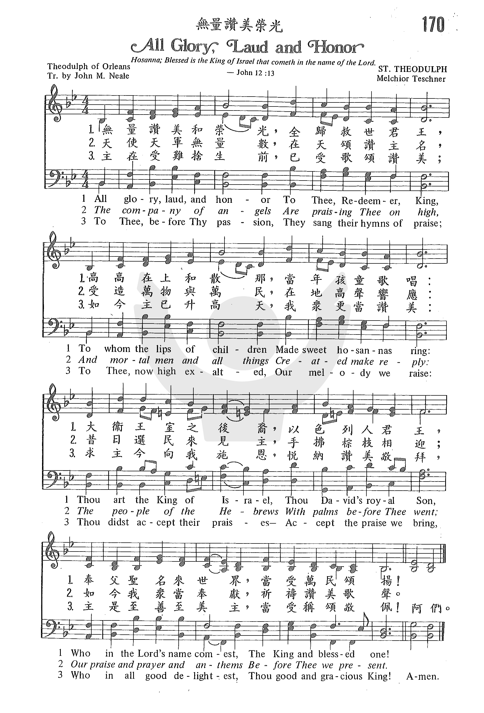
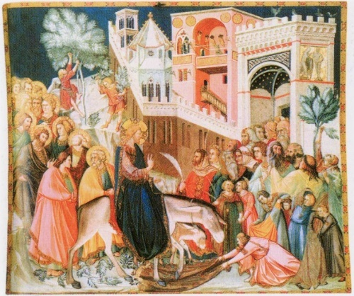

0146 All Glory, Laud, and Honor _Theodulf,
Bishop of Orléans 无量赞美荣光 ST. THEODULPH
▲
|
|
|
|
1 All glory, laud, and honor
to you, Redeemer, King,
to whom the lips of children
made sweet hosannas ring.
You are the King of Israel
and David's royal Son,
now in the Lord's name coming,
the King and Blessed One.
2 The company of angels
is praising you on high;
and we with all creation
in chorus make reply.
The people of the Hebrews
with palms before you went;
our praise and prayer and anthems
before you we present.
3 To you before your passion
they sang their hymns of praise;
to you, now high exalted,
our melody we raise.
As you received their praises,
accept the prayers we bring,
for you delight in goodness,
O good and gracious King!
Psalter Hymnal, (Gray)
|
無量讚美和榮光，全歸救世君王；
「高高在上和散那！」當年孩童歌唱。
以色列民之大君，大衛王室之孫，
奉父聖名世界，當受萬民稱頌。
天使天軍，無量數，在天頌讚主名；
受造萬物與萬民在地高歌相應。
彼時選民迎救主，歡然揮動棕枝；
如今我們同奉獻、頌讚、祈禱、歌詩。
主未受難捨身時，他們向主歌頌；
如今在主升天後，我們同獻心聲。
施恩之主最善良，曾受選民稱讚；
懇求如今也接受我等祈禱頌揚。 |
|
http://sooopu.com/html/301/301079.html


|
| |
|
https://youtu.be/aiSy7m1GDJI
無限榮光與讚美 (附歌詞) All Glory, Laud, and Honor
愛恩詩班與手鐘隊共同獻詩
https://youtu.be/ZIWvfifwNSk
A brief history of the hymn All Glory, Laud, and Honor by Theodulph of Orleans.
http://www.xueshengshi.com/?p=1118
Theodolph of Orleans, 760–821
耶和华我们的神阿，求祢拯救我们，从外邦中招聚我们，
我们好称赞祢的圣名，以赞美祢为夸胜。（诗 106:47）
蒙恩的人都应该操练过赞美的生活，如诗篇 146:2
所说「我一生要赞美耶和华，我还活的时候，要歌颂我的神。」我们应当学习每天起来就开口赞美神，在任何场所，任何情况都赞美神。天天如此操练，有一天，我们就学会了「靠着耶稣，常常以颂赞为祭，献给神」（来
13:15）
]赞美可取得胜利。属灵的得胜不是靠着争战，乃是靠着赞美。我们必须学习靠着赞美胜过撒但，打败并征服一切仇敌。当我们遇见撒但的攻击，世界的试探，罪恶的引诱，肉体的败坏，自己的软弱，感到力不能胜时，应当仰望主，运用信心发出赞美。许多时候，连祷告都不能胜过的难处，一赞美就越过去了。因此，无论甚么情况，只要开口赞美，我们就立刻得着释放自由了。
这首「无量赞美荣光」是传统的棕树节进行曲，乃法国 Orleans 主教 Theodolph 作于 820 年左右。 Theodolph
是当时著名的诗人、牧师和受敬爱的 Orleans 主教。他于 760 年生于意大利，有德国血统。主后 781 年查理曼大帝邀他入在德国 Aachen
的宫内，后来任命他为 Orleans 区主教。但新王路易继位，怀疑他思想不良，心怀不轨，乃将其囚禁于 Angers 一个修道院内。他在狱中，作了此诗， 821
年国王访问该区，路过修道院，听见他从被囚的铁窗中传出这首雄伟的歌声，甚受感动，于是下令释放他，但 Theodolph 在出狱前已服毒自尽了。
1 无量赞美和荣光，全归救世君王，高高在上和撒那，
当年孩童歌唱：大卫王室之后裔，以色列人君王，
奉父圣名召来世界，当受万民颂扬！
2 天使天军无量数，在天颂赞主名，受造万物与万民，
在地高声响应：昔日选民来见主，手拂棕枝相迎；
如今我众当奉献，祈祷赞美歌声
3 主在受难舍身前，已受歌颂赞美；如今主已升高天，
我众更当赞美：求主今向我施恩，悦纳赞美敬拜，
主是至善至美主，当受称赞敬佩
＊赞美，是魔鬼的丧钟！ ── 二听者

https://gospeltimes.cn/article/index/id/55765
无量荣光
ALL GLORY,LAUD,AND HONOUR
《赞美诗（新编）》第88首
前呼后拥的人群喊着说：“和散那归于大卫之子！奉主名来的是应当称颂的！至高无上的，和散那！”——太21:9
中古教会每逢盛大节日，常常组织整队队列行进，由唱诗班歌唱圣诗。《无量荣光》是公元800年左右奥尔良地方的圣提阿的传统棕枝主日来堂礼拜的信徒手执棕枝，整队进入教堂时和唱诗班高声同唱的一首圣诗。会众先唱第一节，然后由唱诗班或特选的人唱以下各节，每节之终再与会众齐唱：
无量荣光和赞美，全归救世之君，
当年儿童的歌唇，和散那歌声震。
相传这首诗是法国奥尔良主教西奥多夫（St.theodulph of
Orleans,760-821）的作品。他是意大利血统，出生于西班牙。曾任佛罗伦萨修道院院长，擅长写诗。公元800年，教皇册封查理曼（Charlemagne,742-814）为皇帝，由他陪同查理曼到罗马。西奥多夫写了一本诗集，叙述他在宫廷的生活和赞美皇帝的尊荣。查理曼擢升他为奥尔良教区主教。就任后他整顿教规与崇拜仪式，发扬唱诗传统，重新抄缮拉丁圣经。818年敬虔的路易（778-840）接替查理曼大帝的王位，怀疑他与意大利叛党有瓜葛，将他撤职，囚于翁热地方的一个修道院内。他在狱中不改其乐，于821年为迎接棕树主日写了这首诗，并教修道士和院中儿童唱诗班唱颂。到了棕树主日那天，路易和随从整队赴礼拜堂时，听见从修道院铁窗中传出动人的歌声而深受感动。他查明原委后，立即下令释放西奥多夫，并恢复其主教职权。蒙难主教的诗歌，敬虔国王的欣赏虽属传说，但却为这首歌增色不少，成为每一本拉丁圣礼书内所不可缺少的一首诗。
原诗共有78行，由刘廷芳、杨荫浏于1933年根据英国尼尔博士的英译的头12行，分为6节翻译的。据尼尔说，直到17世纪，在拉丁文的这首诗中还有下列一节颇为奇妙的语句：
主啊愿你为骑者，我们作主小驴，
一路前行复前行，同奔上帝圣城。
这和上世纪30年代我国灵恩派的一首灵歌，可以说是异曲同工之处，一样虔诚：
我是个驴，就数我卑微，世人看轻贱，竟而蒙主用，
代替他前趋直向圣城走，万民益欢喜。
这首希腊圣诗的英文译者尼尔可以说是翻译希腊、拉丁圣诗的专家，对古曲、文学、希腊、拉丁诗文造诣甚深，而且笔下流利，作品众多，本诗集里的希腊、拉丁圣诗多半都是由他的英译转译过来的。据传有一次他与基布尔（John
Keble,1792-1866，事略参阅第201首）在研究编译圣诗时，不觉纸已用完了，基布尔立即离座到隔壁去拿纸，几分钟后，基布尔回来，尼尔微笑着但又带着质问的口气对他说：“你不是说你写的诗全是创作，怎么这里有首拉丁诗与你的诗一样呢？”说时随手递给他一首手抄的拉丁圣诗，基布尔茫然，看着这首文情并茂的拉丁圣诗，却不知怎么会与他所写的一首诗一模一样，只好自认见闻寡陋。尼尔见他如此局促不安，不觉好笑，就坦白地说这是他在基尔出去拿纸的顷刻之间，根据基布尔的诗翻译的。尼尔文笔之快可见一斑。
尼尔（J.M.Neale,1818-1866）出生于英国伦敦，父亲是圣公会牧师。他自幼即有献身为主承继父职的志愿，及长入剑桥大学，以擅长文学闻名，曾得过诗文奖。1846年起担任牧师，在东格林斯达地方任妇孺救济院的牧师兼监督，帮助了几千妇女脱离疾病与困境。他工作虽多，待遇却甚菲薄，但却乐道安贫，毫无怨言。工作之余从事笔耕，所译希腊、拉丁圣诗更是脍炙人口，英美教会争先采用。1860年美国哈佛大学授予他荣誉神学博士学位。他对自己的作品，从来没有“版权所有”的狭隘私见，而认为能出版一首诗就好像是穷寡妇所投入的两个小钱，不值得大惊小怪；为索取代价就等于亚拿尼亚和撒非喇“把卖田地的钱私自留下一部分”（徒5:3）那样可憎。

这首诗的曲调名叫《圣西奥多夫（ST.THEODULPH）》，是特希纳（M.Teschner,1584-1635）于1613年所作。特希纳生于波兰的西里西亚，是信义宗教会中颇为有名的唱诗班指挥。这是他所谱的一首五声部歌曲，名音乐家巴赫（J.S.Bach,1685-1750）在《约翰受难曲》中曾采用过。本诗集里的这首曲就是选用了巴赫所配的和声。
此圣诗中的延长记号并不作延长使用，作用仅为乐句分句。全曲速度中庸，声音要求雄壮。
歌词由刘廷芳、杨荫浏1933年合译的。
http://pt.fuyinchina.com/m/view.php?aid=6840 006.尊荣与赞美-506诗歌
http://www.sekiong.net/Music/SS/H106.htm
填詞者：St. Theodulph
作曲者：J. S. Bach
無限，榮光與讚美 (ST. THEODULPH)是棕樹主日(Palm
Sunday)最重要的聖詩之一，也是早期拉丁有名的聖詩。拉丁原文為「Gloria, Laus et Honor Tibi Sit, Rex christe
Redemptor」，是提阿多夫 (St. Theodulph)的作品。
詩人St. Theodulph of Orleans (c.760-821)[1]出生在西班牙[2]的高尚家庭，原先任
Fleury及St. Aignan修道院院長，781-818年任法國澳爾良(Orleans)主教。他是繼 Alciun of York
之後成為神聖羅馬帝國查理曼大帝 (Charlemagne the Great, 742-814)之主要神學家。814年查理曼大帝去世，由路易一世
(Louis I, 778-840)繼位。818年 St．Theodulph 被控與義大利王伯納 (King Bernard)
圖謀造反而下監三年，後死於監獄。
這是他在監獄時 (820年)
所寫。詩全長78行，依據詩篇24：7-10；詩篇118：25-26，馬太福音21：1-17和路加福音19：37-38等經文所寫的。
曲調叫ST. THEODULPH或德文 VATER WILL ICH DIR GEBAN (Farewell I Gladly Bid Thee)。由 Melchior
Teschner (1584- 1635)作曲，生於西里西亞 (Silesia) 的佛勞史達 (Fraustadt)
他於1602年進人奧德河畔的法蘭克福大學 (University of Frankurt-an-der-Odor)
唸神學及哲學，1609年成為路德會詩班主領者及學校校長，這首曲子是以他的朋友賀伯格牧師 (Valerius Herberger) 的詩詞 (Valet
will ich dirgeban) 所寫約五部和唱曲，收在1615年出版的詩集 Einandaechtiges Gebet 中。1851年尼爾 (John
Mason Neale, 1818-1866) 將此曲英譯並收在其詩集「中世紀聖詩」(Medieval Hymns, 1851)。此詩初次出現於莫克
(William Henry Monk, 1823-1889，聖詩 368首日斜西山之作曲者) 編的「古今聖詩」(Hymns Ancient and
Modern, 1861)中。
英國名聖詩學者盧特利 (Erik Routley, 1917-1982) 認為此曲乃受伯德
(William Byrd, 1543-1623)之 方塊舞曲 (Selinger's round from Queen Elizabeth's
Virginal Book)影響而寫的[3]，但不為多數學者所同意。
巴哈用此曲調於約翰受難曲 (St. John Passion, BWV 245)第52首
"In meines Herezens Grunde" 的聖詠合唱中，清唱曲95首 (Cantata, BWV 95) 之第三首 "Valet will
ich dir geban" 為女高音詠歎調。此外管風琴曲 BWV 735&736 "Valet will ich dir geban" 亦是BWV
735、及BWV 736都以幻想曲(Fantasia) 形式寫成，通常用聖詩為底，強調腳踏板。 BWV 735 強調死亡之憂愁，BWV 736宣布戰勝死亡。
台灣教會公報第二O三九期 主後一九九一年三月卅一日
[1]早期之傳記資料不準確。雖然大多數之資料著錄 St.Theodulph 之出生年為750年，只有聖詩，Ian
Bradley 編的 The
Penguin Book of Hymns, p.16 及 Richard
Watson 與 Kenneth
Trickett 合著的 Companion
to Hymns and Psalms, p. 603 著錄 760年出生。Arthur
N. Wake 著 Companion
to Hymn -book for Christian Worship 著錄 770 年出生。
[2]大部分的聖詩指南著錄為西班牙人，只有 Donald
P. Hustad 著 Dictionary
Handbook for the Living church (1978)，p.327,
Arthur N. Wake 著 Companion
to Hymnbook for Christian Worship, William J. Reynold 著 Companion
to Baptist Hymnal(1976), Ian Bradley 著 The
Penguin Book of Hymns (1989), p.16 及 W.G..
Polack 著 The
Handbook to the Lutheran Hymnal (1942) 提及他是義大利人。Lawrence
R. Schoenhals 著 Companion
to Hymns of Faith and Life (1980)及 Marilyn
Kay Stulken 著 Hymnal
Companion to the Lutheran Book of Worship 不確定他是義大利或西班牙人。
[3] The Music of Christian Hymns,
p.59。
[i] 見 Marilyn Kay Stulken 著 Hymnal Companion to the Lutheran Book of
Worship, p. 28，但葛哈特之專書 Theodore Brown Hewitt 的博士論文 Paul Gerhardt as a Hymn
writer and his Influence on English Hymnody，New Haven :Yale University
Press，1918(2nd ed. St. Louis: Concordia Press, 1976), p.14，認為有 132
首，其中有84首被翻為英文。
[ii] 由於資料不全，一般學者把此曲歸於巴哈的作品(attributed by J. S. Bach)，
但也有一些學者認為不是巴哈的作品。在 W.G. Polack 著的 The Handbook to the Lutheran
Hymnal，p.375 載此詩可能是巴哈所寫，但不確定，Richard Watson and Kenneth Trickett 著
Companion to Hymns & Psalms，p.2l1，認為「可能」為巴哈所寫。
http://blog.sina.com.cn/s/blog_4e7519ed0102e7nn.html
1.无量荣光和赞美，全归救世之君
当年儿童的歌唇，和散那歌声震
2.大卫王家的后裔，以色列人君王
奉父圣名来世界，当受万众赞扬
3.天使天军无量数，在天赞美主名
受造万物和万民，在地高歌相应
4.当初有希伯来族，迎主欢拂棕枝
如今我众同恭献颂赞，祈祷歌诗
5.当年在主受难前，他们向主歌诗
如今在主升天后，我们奉献新词
6.慈悲之主爱善良，从前悦纳他们
恳求如今也接受，我众赞美之诚
（副歌）
无量荣光和赞美，全归救世之君
当年儿童的歌唇，和散那歌声震
按教会的传统（特别是天主教），每年的棕枝节，都会有唱诗与表演，是一个极其热闹的节日。在那个主日，各地教会都会唱着这首诗歌。而对于儿童们，棕枝主日就是一个很快乐的节日。
此诗为赛欧德弗（Theodulph of
Orleans，760－821）约于800年所写。作者为意大利人后来迁到法国，被封为奥力安主教。后来因他有对国王路易不忠的嫌疑，被捕入狱。在狱中写了这首圣诗，流传至今。原诗共有78行，后人有些删减。中文译词是由刘廷芳与杨荫浏合译，最先刊于《普天颂赞》。该诗原为特齐那（Melchior
Teschner，1584－1635）所作，后经古雷得（Sarum Gradual）修正。
1980年，恢复后的中国基督教三自爱国运动委员会编辑《赞美诗（新编）》，将该诗选入第88首，为棕枝节仅有的两首诗歌之一。由于宗派后教会不太重视礼仪与节日，遂今日教会很少人传唱。但此诗却是在棕枝节，对耶稣骑驴进京的美好表达。
诗歌的第一节与副歌相同，
作为诗歌的引子，宣召会众加入歌颂基督的行列，以儿童无邪的生命，将无量的荣光和赞美，归给救世的君王。这个宣召将我们带到诗人所发出的邀请，说：“众城门哪，你们要抬起头来。永久的门户，你们要被举起。那荣耀的王将要进来。荣耀的王是谁呢？就是有力有能的耶和华，在战场上有能的耶和华。众城门哪，你们要抬起头来。永久的门户，你们要把头抬起。那荣耀的王将要进来。荣耀的王是谁呢？万军之耶和华，他是荣耀的王。”（诗24：7－10）
第二节，诗歌宣告耶稣基督的身份，
是“大卫王家的后裔，以色列人君王，奉父圣名来世界，当受万众赞扬。”这句话其实就是圣经中儿童与民众的宣告，即“和散那归于大卫的子孙，奉主名来的，是应当称颂的。高高在上和散那。”（太21：9）
第三节，则是一种属灵的臆想，将我们带到当时的场景之外，
使我们去想象除了耶路撒冷城人们的欢呼之外，还有无数“天使天军”在赞美主名，正对应地上“受造万物和万民，在地高歌相应”。作者向我们揭示一个属灵的真理，即敬拜是永�琲滿A不仅是人的义务，乃是一切受造之物的本能。
第四、五节，用“当初”、“当年”与“如今”，将希伯来民族与今日基督徒连结在一起，
形成“圣徒相通”的效果。今日基督徒一边想像着昔日希伯来民族迎主欢拂棕枝的情景，一边恭献颂赞、祈祷歌诗。昔日希伯来民族在主受难之前，向主发出歌诗，今日信徒则在主升天之后，向主献上“新词”。
第六节，还是用相同的方式超越时空的限制，
不同的是本节用祈祷的方式来恳求“慈悲之主”从前如何悦纳希伯来民族的歌声，今日也接受信徒发自内心真诚的赞美。
在今日敬拜赞美盛行的时代，现代教会音乐似乎已将传统经典诗歌抛诸脑后。但在记念主耶稣基督受难的日子里，将这首被遗忘的诗歌重新介绍给今日基督徒，使我们离主受难已近二千年的人与耶稣时代的民众一同高呼“和散那”，与天使天军在永�琩蔆q拜，实践“我信圣徒相通”的美好。

2013年3月24日星期日棕枝主日
https://hymnary.org/text/all_glory_laud_and_honor
This hymn text was written by St. Theodulph of Orleans in 820 while he was
imprisoned in Angers, France, for conspiring against the King, with whom he had
fallen out of favor. The text acts as a retelling of the triumphal entry of
Jesus into Jerusalem. The medieval church actually re-enacted this story on Palm
Sunday using a standard liturgy that featured this hymn. The priests and
inhabitants of a city would process from the fields to the gate of the city,
following a living representation of Jesus seated on a donkey. When they reached
the city gates, a choir of children would sing the hymn, then in Latin: Gloria,
laus et honor,
and the refrain was taken up by the crowd. At this point the gates were opened
and the crowd made its way through the streets to the cathedral. Though we might
not have any city gates to proceed through today, this hymn still acts as a
royal hymn of praise and proclamation. Today we praise the “Redeemer, King”
because we know just what kind of King He was and is – an everlasting King who
reigns not just in Jerusalem, but over the entire earth. What more could we do
but praise Him with glory, laud, and honor.
Text:
Theodulph’s original text consisted of 39 couplets, or 78 lines. Thankfully,
this was significantly shortened by editors in 1859 to the familiar three-verse
form used today, taken from the 1854 translation into English by J. M. Neale.
Most hymnals include the same three verses, as shown in the Psalter Hymnal.
One alteration found in some hymnals is that the first two lines, “All glory,
laud, and honor to you, Redeemer, King, to whom the lips of children made sweet
hosannas ring,” are used as a refrain sung at the beginning of each verse, each
of which then consist of two lines of each original verse, resulting in five
verses instead of three. This can be found in the Episcopal Hymnal: 1982 and
the Presbyterian Hymnal. One advantage of this version is that if you’re
using the hymn as a processional, the extra refrain extends the hymn and gives
you more time.
Tune:
The tune ST. THEODULPH or VALET WILL ICH DIR GEBEN was composed by Melchior
Teschner in 1613 for a hymn of the same German name. It was soon joined with
Theodulph’s text. The one downfall of this tune is the low-pitched ending. Some
hymnals put the tune in the key of B flat to keep it from going too high on the
ascending lines, but it might be worth bumping it up to C if the last note is
too low for your congregation.
There are a few common harmonizations of this tune. The first, by William H.
Monk, was published in 1861. This can be found in Psalter Hymnal 376 and Presbyterian
Hymnal 88. Another harmonization was written by J. S. Bach, taken from his
arrangement of the hymn for the St. John Passion. For either of these
harmonizations, pull out all the stops on organ and brass. The Psalter Hymnal also
includes a more recent double descant on verse three by Randall De Bruyn.
Redeemer Church of Knoxville has a guitar and piano-led folk version of the hymn
on their album, "Rise, O Buried Lord", which you can listen to on their website
– redeemerknoxville.bandcamp.com. For a hymn that is so well known with organ
and brass accompaniment, this folk version works surprisingly well as a joyful,
exuberant song of praise. They also extend the hymn by ending with a repeated
refrain of “Hosannas.”
Notes
Now often named ST.
THEODULPH because of its association with this text, the tune is also
known, especially in organ literature, as VALET WILL ICH DIR GEBEN. It was
composed by Melchior Teschner (b. Fraustadt [now Wschowa, Poland],
Silesia, 1584; d. Oberpritschen, near Fraustadt, 1635) for "Valet will ich
dir geben," Valerius Herberger's hymn for the dying. Teschner composed the
tune in two five-voice settings, published in the leaflet Ein
andächtiges Gebet in 1615.
Teschner studied
philosophy, theology, and music at the University of Frankfurt an-der-Oder
and later studied at the universities of Helmstedt and Wittenberg,
Germany. From 1609 until 1614 he served as cantor in the Lutheran church
in Fraustadt, and from 1614 until his death he was pastor of the church in
Oberpritschen.
ST. THEODULPH is a
vigorous, bar form (AAB) tune with a strong ascending figure in the
opening line. The tune has an exuberance marred only by the low-pitched
ending, some congregations may prefer C major.
Two harmonizations are
provided. The one at 375 by William H. Monk (PHH
332) was first published in Hymns Ancient and Modern (1861).
The harmonization at 376 is by Johann S. Bach (PHH
7), taken from his St. John Passion. For either one use a large organ
registration, perhaps with brass fanfares/interludes. Try using the fine
double descant by Randall De Bruyn (b. Portland, OR, 1947) for stanza 3
with a ritardando at the very end of the stanza (376).
De Bruyn attended Lewis
and Clark College, Portland, Oregon, and the University of Illinois (M.M.
and D.M.A.). Many of his compositions and arrangements have been published
by Oregon Catholic Press, where he has been music editor and currently
serves as staff composer and arranger. His Traditional Choral Praise (1992)
contains at least 160 hymn arrangements for SATB and SAB choirs with vocal
and instrumental descants.
Many composers have
composed organ music on this tune. Hal Hopson's The Singing Bishop,
a children's musical based on this hymn, could provide an effective
prelude for a Palm Sunday service.
--Psalter Hymnal
Handbook, 1987
When/Why/How:
There is a popular story
about this hymn. Legend has it that while St. Theodulph was still in prison,
on a certain Palm Sunday, the King of France, who had put Theodulph in prison,
was processing through the streets on his way to the cathedral. As he passed
below the prison tower, Theodulph began to sing “All Glory, Laud and Honor.”
The king was so moved by his song that he released him and declared that the
hymn was to be sung on Palm Sunday every year from then on. While this is most
likely nothing but a good story, it shows the popularity of the hymn, and
proves an effective teaching tool for children. Hal Hopson turned the story
into a 15 minute musical for children called “The Singing Bishop.” This
musical works well at the beginning of a service or in lieu of a prelude,
after which everyone rises and sings the hymn together. Another short music
drama is The
Crown and the Cross (A Palm/Passion Sunday Suite with music arranged by
Mark Hayes
While this hymn is known as
a quintessential processional hymn for Palm Sunday, it could be sung on Easter
morning and throughout the Easter season, even on Ascension Sunday, since the
last verse says, “to you, now high exalted, our melody we raise.” It is also
possible to use the hymn during Advent, when again we wait for and announce
the King, “now in the Lord’s name coming.”
Laura de Jong,
Hymnary.org
Notes
Scripture References:
st. 1-3 = Matt. 21:1-17, Mark 11:1-10, Luke 19:28-38, John 12:12-13
st. 2 = Rev. 5:11-12
Theodulph, bishop of
Orleans, wrote this text around 820 while he was imprisoned at Angers,
France, for conspiring against King Louis the Pious. A probably apocryphal
story from the early sixteenth century states that in a Palm Sunday
procession King Louis passed the prison in which Theodulph was housed and
heard the imprisoned bishop singing this hymn. According to the legend the
king was so moved that he freed Theodulph and decreed the singing of "All
Glory, Laud, and Honor" on all subsequent Palm Sundays.
The text was originally in
thirty-nine Latin couplets, although only the first twelve lines were sung
in ancient liturgical use (since a late-ninth-century manuscript from St.
Gall). John M. Neale (PHH
342) translated the text into English in his Medieval Hymns and
Sequences (1851). Neale revised that translation for The Hymnal
Noted (1854); a further altered text was included in the original
edition of Hymns Ancient and Modern (1861).
Based on Matthew 21:1-11
(and similar passages in Mark 11, Luke 19, and John 12), the text was
originally written for a Palm Sunday procession. Thus it reflects on the
original Palm Sunday's hymns of praise by the Jews as well as on our praise
today.
Liturgical Use:
Palm Sunday morning processional; possibly during Advent.
--Psalter Hymnal
Handbook
https://www.umcdiscipleship.org/resources/history-of-hymns-all-glory-laud-and-honor
“All Glory, Laud, and Honor”
Theodulph of Orleans; Translated by John Mason Neale
UM Hymnal, No. 280
John Mason Neale
All glory, laud, and honor,
To thee, Redeemer, King,
To whom the lips of children
Made sweet hosannas ring.
Thou art the King of Israel,
Thou David’s royal Son,
Who in the Lord’s name comest,
The King and Blessed One.
“All Glory, Laud, and Honor” is perhaps the quintessential Palm Sunday entrance
hymn. With its Latin text written in the 9th century by Theodulph of Orleans
(ca. 750-821), its English translation by John Mason Neale (1818-1866) and its
majestic 17th-century German tune by Melchior Teschner (1584-1635), one would
have to look far and wide for a hymn more rooted in Western historical and
cultural traditions.
The Latin text begins:
Gloria, laus, et honor tibi sit, rex
Christe, Redemptor,
cui puerile decus prompsit Hosanna pium. . . .
A literal translation demonstrates how faithful Neale—the prince of 19th-century
translators—was to the original text: “Glory and honor and laud be to thee,
Christ, King and Redeemer, Children before whose steps raised their Hosannas of
praise. . . .”
Following his election in 1800 as Archbishop of Orleans, Theodulph was prominent
in the court of Charlemagne. However, he did not fare as well under
Charlemagne’s successor, Louis I (also known as Louis the Pious), emperor from
814-840. Theodulph was accused of participating in the rebellion of Bernard of
Italy and, subsequently, was imprisoned.
Methodist hymnologist Fred Gealy notes the context for the writing of this hymn:
“According to the legend as told by Clichtoveus, in his Elucidatorium, 1516, the
hymn was composed and first sung on a certain Sunday when Theodulph was
imprisoned in Angers. Emperor Louis was present that day as the procession moved
through the city and halted beneath the tower where the saint was imprisoned.
Suddenly, to his astonishment, the emperor heard from above the Gloria Laus,
chanted loudly and melodiously. Being charmed, he asked the name of the singer
and was told that it was his own prisoner, Theodulph. Moved with compassion for
him, the emperor pardoned the saint, returned him to his see and ordered that
henceforth the hymn which Theodulph had composed be sung on Palm Sunday.”
British hymnologist J. Richard Watson notes that “modern scholars have cast
doubt on the story of the release from prison, which would have appealed
strongly to [the translator and romantic John Mason] Neale. Louis did not visit
Angers after 818, which was the date of Theodulph’s imprisonment. Neale would
have liked to think that a hymn could have such a powerful effect.”
The Rev. Carlton Young, editor of the UM Hymnal, notes that the Latin text was
translated eight times between 1849 and 1874. Neale himself made two
translations for his monumental Mediaeval Hymns and Sequences (1851). The second
and common version from his Hymnal Noted, part 2 (1854) consisted of eight
stanzas with the first used as a refrain. The first six stanzas appear in the UM
Hymnal with the first serving as the refrain.
The text follows generally the description of the triumphal entrance into
Jerusalem as found in all four Gospels.
An interesting note is that Theodulph inserts children (puerile) directly into
his Latin hymn. There is no biblical basis for this, either in the Latin Vulgate
or the King James Version. The accounts of Matthew and Luke include a reference
to children, but these have nothing to do with children singing specifically
during the triumphal entry. Matthew 21:16 notes, “Yea; have ye never read, Out
of the mouth of babes and sucklings thou hast perfected praise?” This mention of
children takes place several verses after the narrative of the triumphal entry.
Recent developments in the Christian Year relabeled this Sunday as Palm/Passion
Sunday. In doing so, the exuberance of the triumphal entrance soon gives way to
the anticipation of the Passion of Christ that is to follow—all within the same
service.
Dr. Hawn is professor of sacred music at Perkins School of Theology, SMU.
https://en.wikipedia.org/wiki/All_Glory,_Laud_and_Honour
From Wikipedia, the free encyclopedia
"All Glory, Laud and Honour", is an
English translation by the Anglican clergyman John
Mason Neale of the Latin hymn
"Gloria,
laus et honor", which was written by Theodulf
of Orléans in 820.[1] It
is a Palm
Sunday hymn, based on Matthew
21:1–11 and the occasion of Christ's triumphal
entry into Jerusalem.[2]
History[edit]
Theodulf became the Bishop
of Orléans under Charlemagne.
When Charlemagne died and Louis
the Pious became the emperor of the Holy
Roman Empire, Theodulf was removed from the bishopric and placed under
house arrest at a monastery in Angers during
the power struggle following Louis' ascension, mostly due to his opposition
to icons and Louis' suspicion that Theodulf supported an Italian rival
to the throne.[3] During
his arrest, Theodulf wrote "Gloria, laus et honor" for Palm Sunday.
Although likely apocryphal, a 16th-century story asserted that Louis heard
Theodulf sing "Gloria, laus et honor" one Palm Sunday, and was so inspired
that he released Theodulf and ordered that the hymn be sung thereafter on
every Palm Sunday.[4][5]
A translation into Middle English was
effected by William Herebert: "Wele, herying and worshipe be to Christ
that dere ous boughte,/ To wham gradden 'Osanna' children clene of
thoughte."
In 1851, John Mason Neale translated the
hymn from Latin into English to be published in his Medieval Hymns and
Sequences. Neale revised his translation in 1854 and revised it
further in 1861 when it was published in the first edition of Hymns
Ancient and Modern.[2]
The hymn was originally made of thirty-nine
verses however only the first twelve lines were sung since a ninth-century
published manuscript attributed to St.
Gall until Neale's translation.[2] The
original Latin words are used by Roman
Catholics alongside the English translation.[6]
Neale's hymn appears as Number 86 in Hymns
Ancient & Modern in a version with six stanzas, using the first
four lines as the refrain, which is repeated between each stanza. The
original Latin stanzas were more numerous, but although they were
translated by Neale, many are not sung nowadays, including one which was
omitted for "evident reasons", the first two lines reading "Be Thou, O
Lord, the Rider,/ And we the little ass;".[7] The
hymn's principal theme is praising Christ's triumphal
entry into Jerusalem,[8] as
evident in the refrain, and it is usually sung for Palm Sunday.[9]
All glory, laud, and honour
To Thee, Redeemer, King!
To Whom the lips of children
Made sweet Hosannas ring,
Thou art the King of Israel
Thou David's Royal Son,
Who in the LORD'S name comest,
The King and Blessèd One.
All glory, &c.
The company of Angels
Is praising Thee on high,
And mortal men, and all things
Created make reply.
All glory, &c.
The people of the Hebrews
With palms before Thee went
Our praise and prayers and anthems
Before Thee we present.
All glory, &c.
To Thee before Thy Passion
They sang their hymns of praise;
To Thee now high exalted
Our melody we raise.
All glory, &c.
Thou didst accept their praises;
Accept the praise we bring,
Who in all good delightest,
Thou good and gracious King.
All glory, &c.[5]
 |
Wikisource has original text related to this article:
|
The commonly used tune of the hymn, titled
"St. Theodulf" or originally "Valet
will ich dir geben", was composed in 1603 by Melchior
Teschner.[10] The
following harmonisation is from Johann
Sebastian Bach,[11] as
it appears in the New
English Hymnal:[12]
In popular culture[edit]
In 1967, the hymn was covered by British
singer Sir
Cliff Richard on his Good News album.[13]
https://en.wikipedia.org/wiki/Theodulf_of_Orl%C3%A9ans
From Wikipedia, the free encyclopedia
Theodulf of Orléans (c. 750(/60)
– 18 December 821[disputed – discuss])
was a writer, poet and the Bishop
of Orléans (c. 798 to 818) during the reign of Charlemagne and Louis
the Pious. He was a key member of the Carolingian
Renaissance and an important figure during the many reforms of the
church under Charlemagne, as well as almost certainly the author of the Libri
Carolini, "much the fullest statement of the Western attitude to
representational art that has been left to us by the Middle Ages".[1] He
is mainly remembered for this and the survival of the private oratory or
chapel made for his villa at Germigny-des-Prés,
with a mosaic probably
from about 806.[2] It
was in Bible manuscripts produced under his influence that the Book
of Baruch and the Letter
of Jeremiah (as Chapter 6 of the Book of Baruch) became part of the
Western (Vulgate)
Bible canon.
Theodulf was born in Spain,
probably Saragossa,
between 750 and 760, and was of Visigothic descent. He
fled Spain because of the Moorish occupation of the region and traveled to
the South-Western province of Gaul called Aquitaine,
where he received an education.[4] He
went on to join the monastery near Maguelonne in
Southern Gaul led by the abbot Benedict
of Aniane. During his trip to Rome in 786, Theodulf was inspired by
the centres of learning there, and sent letters to a large number of
abbots and bishops of the Frankish empire, encouraging them to establish
public schools.[5]
Charlemagne recognized Theodulf's importance
within his court and simultaneously named him Bishop of Orléans (c. 798)
and abbot of many monasteries, most notably the Benedictine abbey
of Fleury-sur-Loire.[6] He
then went on to establish public schools outside the monastic areas which
he oversaw, following through on this idea that had impressed him so much
during his trip to Rome. Theodulf quickly became one of Charlemagne's
favoured theologians alongside Alcuin of
Northumbria and was deeply involved in many facets of Charlemagne’s desire
to reform the church, for example by editing numerous translated texts
that Charlemagne believed to be inaccurate and translating sacred texts
directly from the classical
Greek and Hebrew languages.[7] He
was a witness to the emperor's
will in 811.
Charlemagne died in 814 and was succeeded by
his son Louis the Pious.[8] Louis'
nephew, King Bernard
of Italy, sought independence from the Frankish empire and raised his
army against the latter. Bernard was talked into surrendering, but was
punished by Louis severely, sentencing him to have his sight removed. The
procedure of blinding Bernard went wrong and he died as a result of the
operation.[9] Louis
believed that numerous people in his court were conspiring against him
with Bernard, and Theodulf was one of many who were accused of treason. He
was forced to abandon his position of Bishop of Orléans in 817 and was
exiled to a monastery in Angers in
818 where he spent the next two years of his life.[10] After
he was released in 820, he tried to reclaim his bishopric in Orléans but
was never able to reach the city because it is believed that he died
during the trip or some time after that. Theodulf of Orléans died on
January 18, 821,[disputed – discuss] and
his body was brought back to Angers where
it was buried.[11]
According to some sources Theodulf may have
been married at the beginning of his career and had a daughter named Gisla.[12]
Villa at
Germigny-des-Prés[edit]
The oratory at Germigny-des-Prés (Loiret,
Orléanais), an example of Carolingian
architecture, was built by Bishop Theodulf in 806 as part of his
Gallo-Roman villa in Germaniacus. Theodulf was also abbot of the
neighboring monastery of Saint-Benoît-sur-Loire.
His complex at Germigny-des-Prés was in a general sense modelled on
Charlemagne's Palace
of Aachen, the center of the Carolingian
Empire at that time.
All except the oratory was destroyed by the Normans (then
just emerging from the Vikings)
within a century of construction. The villa had frescos of
the Seven
liberal arts, the Four
Seasons, and the Mappa
Mundi,[13] and
the mosaic in
the oratory is virtually the only Carolingian
mosaic to survive, though over-restored in the 1860s, when the oratory
was given what is generally agreed to have been a disastrous
over-restoration and reconstruction. The subject of the mosaic, the Ark
of the Covenant with attendant angels, is otherwise only found in
early Jewish bibles (usually as the sole illustration), and probably
relates to the Libri Carolini, where the Ark, with its golden cherubim,
is mentioned as a significant proof of divine approval of religious
images.
Writings[edit]
Capitularies[edit]
As Bishop of Orléans (798–818), Theodulf
wrote two important capitularies.
Capitula ad presbyteros parochiae
The first capitulary was a reminder to the
priests of his diocese of the importance of manual labour, studying,
prayer and chastity.[14]
Capitula altera Theodulpho episcopo
Aurelianensi adscripta
The second capitulary focused on his code of
penance where he lists the consequences of murder, adultery, fornication,
incest, thievery, usury and
other infractions.[15] It
is divided in ten main parts:
- De ammonitione sacerdotum
- De adulteriis et incestis et
fornicationibus
- De confessionibus laicorum
- De homicido
- De mulierum delictis
- De furto et falso testimonio
- De inrationabili fornicatione
- De adultero presbytero publice et
occulte
- De usurariis
- De inquisition octo vitiorium ad
confessionem
Hymns and poems[edit]
Theodulf composed hymns and poems as well,
of which 80 are preserved. Gloria,
laus et honor is the most famous one of them.
Libri Carolini[edit]
Theodulf was also almost certainly
responsible for composing the Libri
Carolini (c. 793) which served as a rebuttal to a faulty
translation of the acts of the Second
Council of Nicaea of 787 which was mistakenly interpreted as saying
that the worship ("adoration") of images was acceptable in the church.[16] According
to it, the Council suggested that an end was to be put to the iconoclastic
period which had led to the destruction of many sacred images in the
church, especially in Constantinople,
which was only partially true. This translation made its way from Rome to
the court of Charlemagne where it infuriated the Frankish emperor and his
loyal theologians, including Theodulf, who was ordered to write the Libri
Carolini in Charlemagne's name in a way that portrayed him as the sole
representative of the Western world and defender of the church against a
supposed idolatry.[17]
According to the Libri Carolini,
images may be used as ecclesiastical ornaments, for purposes of
instruction, and in memory of past events. It would be foolish, however,
to burn incense before them and to use lights, though it would be quite
wrong to cast them out of the churches and destroy them. Strong opposition
is voiced in it to "adoration" of images, wrongly believing that the
Council in Nicaea used this word, taken to mean the absolute adoration
reserved for God alone, while only an appropriate veneration is
to be given to the saints,
and reverential honour to the Cross of Christ, Scripture, sacred vessels,
and relics of
the saints. The Greek word προσκύνησις that the Council in fact used means
no more than reverence in a prostrate attitude.[18]
Key values[edit]
Hospitality[edit]
Theodulf brought fresh ideas and an open
mind to the period known as the Carolingian Renaissance. He believed in
always keeping the door open and never refusing pilgrims, travelers or the
poor if they needed a meal or a place to stay for the night. He believed
that you had to offer the less fortunate a seat at your dinner table if
you one day wished to have a seat at the banquet of God. These ideas were
highly influenced by his readings of Augustine.[19] He
often referred to himself as the poor traveler or stranger, being born in
Spain and of Visigothic descent, and being accepted with open arms by the
royal court of Charlemagne.[5]
Literature
and the liberal arts[edit]
Theodulf was an avid reader of Christian
literature, and some of his favorite writers are listed in one of his
letters to the Pope
Leo III which include mentions of texts by Gregory
the Great, St.
Augustine, St.
Jerome, and St.
Isidore.[20] He
also mentions in his letters that he enjoyed reading pagan literature
including poems by Virgil and Ovid which he thought may seem filled with
heresy at first, but underneath the surface had useful morals which could
be applied to Christian morality.[21] He
was also very fond of the Seven Liberal Arts and they were depicted in
fresco in his dining room so that his spirit and body could be fed
simultaneously.[19]
See also[edit]
https://en.wikipedia.org/wiki/Melchior_Teschner
From Wikipedia, the free encyclopedia
Jump to navigationJump
to search
Melchior Teschner (29 April 1584 – 1
December 1635) was a German cantor,
composer and theologian.
Born in Wschowa in
Poland, Teschner attended the Gymnasium in Zittau,
Saxony, and studied under Johann Klee. In 1602 he began studies in music
theory, philosophy and theology with Bartholomäus
Gesius at the University
of Frankfurt an der Oder
In 1605 to 1608, Teschner served as cantor
and lector in Schmiegel, Posen, between sessions of study in the
universities of Helmstedt and Wittenberg.
From 1609 he spent five years as cantor at the Protestant church "Zum
Kripplein Christi" in his home town of Fraustadt, before being ordained as
pastor in Oberpritschen, Posen, where he died.
Teschner wrote the melodies of several hymns:
- "Anbetung dir, dem Lamme" (1613)
- "Das Jahr geht still zu Ende"
- "Der du zum Heil erschienen" (1613)
- "Die Segenshände breite, Herr, über
unser Haus"
- "Dir, dem hocherhob'nen Herrn"
- "Erbaut auf einem Grunde" (1613)
- "Es gilt ein frei' Geständnis" (1613)
- "Herr, laß nach dir uns fragen" (1613)
- "Herr über Tod und Leben" (1613)
- "Laß mich dein sein und bleiben"
(1614)
- "O Gott, nimm an die Gaben" (1613)
- "O lasset uns Ihn lieben, der uns
zuerst geliebt" (1613)
- "Valet
will ich dir geben" (1613), used also for "All
Glory, Laud and Honor"
The melody of "Valet will ich dir geben" was
also used for the 1954 hymn "Den
Herren will ich loben", Maria Luise Thurmair's paraphrase of the Magnificat.
Literature[edit]
Music
Words: Theodulph of Orleans (b. AD 760; d. AD 821);
English translation, John Mason Neale (b. Jan. 24, 1818; d. Aug. 6,
1886)
Music: St. Theodulph, by Melchior Teschner (b. Apr. 29,
1584; d. Dec. 1, 1635)
Links:
Wordwise Hymns
The Cyber
Note: The Wordwise Hymns link will give you a biography of Theodulph.
The hymn was written around AD 820, while Bishop Theodulph was in
prison. There is also a legend about the way his own Palm Sunday hymn
led to his release from prison (on a charge of treason).
The legend is that the emperor, Louis I, who had imprisoned Theodulph,
was passing by the prison one Sunday, in grand procession. Suddenly,
from the tower above, a voice was heard singing this hymn. The emperor
was touched by the words, and asked who was singing. When he found out,
he ordered Theodulph to be released, also commanding that the hymn be
sung on Palm Sunday from then on.
So the story goes. And though it’s not likely true, it does, in a
way, attest to the continuing popularity of the hymn.
In some hymn books, the first verse is used as a repeated refrain.
Others simply use it as the first stanza. Because it seems less
repetitious. I encourage you to use “All glory, laud, and honour…” as
stanza one, rather than a refrain. You can use Teschner’s tune, or the
tune Ellacombe (commonly associated with Isaac
Watts’s I Sing the Mighty Power of God).
The last two stanzas of the hymn, as translated by John Mason Neale,
are not used today. Surprisingly, what I’ve labeled stanza seven below
was used until the seventeenth century. Today, it seems beyond quaint,
and would likely bring great hilarity if it were sung by a congregation
today!
7) Be Thou, O Lord, the Rider,
And we the little ass;
That to God’s Holy City
Together we may pass.
8) Receive, instead of palm-boughs,
Our vict’ry o’er the foe,
That in the Conquerer’s triumph
This strain may ever flow.
These things aside, this is a thoughtful consideration
of the events of Palm Sunday. What is called the Triumphal Entry of
Christ into Jerusalem fulfilled the prophecy of Zechariah that this was
to be exactly how Israel’s Messiah would present Himself to them as
their King.
“Rejoice greatly, O daughter of Zion! Shout, O daughter of
Jerusalem! Behold, your King is coming to you; He is just and having
salvation, lowly and riding on a donkey, a colt, the foal of a
donkey” (Zech. 9:9).
It is such a significant event that all for Gospel writers include it
(Matt. 21:1-11; Mk. 11:1-10; Lk. 19:25-38; Jn. 12:12-19). Of course we
know that, shortly after the excitement of that day, Christ was rejected
and crucified. Long years of Israel’s spiritual blindness had led to a
national rejection of their Messiah-King. After the Triumphal Entry, the
Lord mourned over the city of Jerusalem with these passionate words:
“As He drew near, He saw the city and wept over it, saying, ‘If
you had known, even you, especially in this your day, the things
that make for your peace! But now they are hidden from your eyes”
(Lk. 19:41-42).
Even so, we can do as Theodulph does, and identify ourselves with the
praise of His followers on Palm Sunday.
All glory, laud and honour,
To Thee, Redeemer, King,
To whom the lips of children
Made sweet hosannas ring.
CH-1) Thou art the king of Israel,
Thou David’s royal Son,
Who in the Lord’s name comest,
The King and Blessèd One.
CH-2) The company of angels
Are praising Thee on High,
And mortal men and all things
Created make reply.
CH-3) The people of the Hebrews
With palms before Thee went;
Our prayer and praise and anthems
Before Thee we present.
CH-4) To Thee, before Thy passion,
They sang their hymns of praise;
To Thee, now high exalted,
Our melody we raise.
Questions:
1) Does your church celebrate Palm Sunday? What is the emphasis and
message for today, if you do?
2) Why was there such a swift turn-around, a week later? (That is,
what factors led to Jesus’ arrest and execution, in spite of His
popularity with many?)
Links:
Wordwise Hymns
The Cyber
https://wordwisehymns.com/2014/06/16/all-glory-laud-and-honour/

![<< <<
\new Staff { \clef treble \time 4/2 \key a \minor \partial 2 \set Staff.midiInstrument = "church organ" \relative c'
<< {
\set Score.tempoHideNote = ##t \override Score.BarNumber #'transparent = ##t
c2 | g' g a b | c1 c2 \breathe e | d c c b | c1. ^\markup{"Fine"} \bar":|." \break
c4( d) | e2 e d c | b4( a b2) g \breathe b | c b a a | g1. \bar"||" \break
g2 | e4( f) g2 a g | g( f) e \breathe g | f e d d | c1. ^\markup{"D.C."} \bar "|." } \\
{ g2 | c e f e | e1 e2 a | a f e d | e1.
e4( f) | g2 a a fis | g4( fis g2) d g | g g g fis | d1.
d2 | c4( d) e2 f e | e( d) c c | c c c b | g1. }
>>
}
\new Lyrics \lyricmode {
All2 glo -- ry, laud and ho1 -- nour2
To2 thee, Re -- deem -- er, King,1.
Thou2 art the King of Is1 -- rael2
Thou2 Da -- vid's ro -- yal Son,1.
Who2 in the Lord's name co1 -- mest,2
The King and bless -- èd One1.
}
\new Lyrics \lyricmode {
To2 whom the lips of chil1 -- dren2
Make2 sweet ho -- san -- nas ring.1.
}
\new Staff { \clef bass \key a \minor \set Staff.midiInstrument = "church organ" \relative c
<< { e2 | g c c b | a1 a2 c | a a g g | g1.
g2 | c c d d | d4( c d2) b d | c d e d4( c) | b1.
g2 | g c c bes | a1 a2 e | f g a g4( f) | e1. } \\
{ c2 | e c f gis, | a1 a2 a' | f d g g, | c1.
c2 | c'4( b) a( g) fis2 d | g1 g,2 f'! | e d c d | g,1.
b2 | c bes a4( b) cis2 | d1 a2 bes | a g fis g | c1. }
>>
}
>> >>
\layout { indent = #0 }
\midi { \tempo 2 = 90 }](https://upload.wikimedia.org/score/r/m/rm7q0sksalyutdu2nhknhs1rh7ej5d9/rm7q0sks.png)